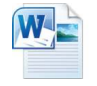
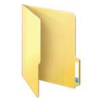
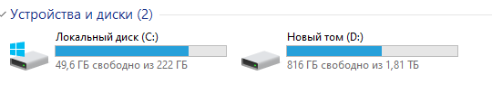
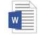
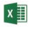
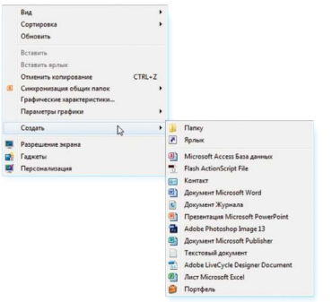
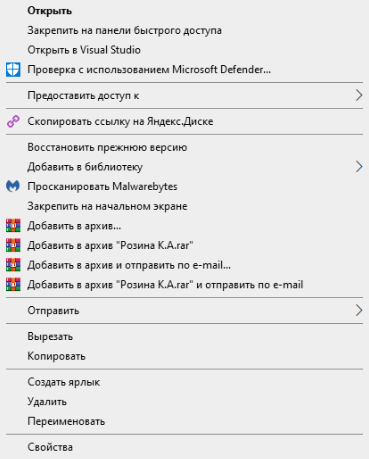
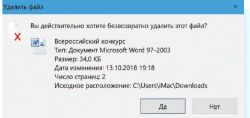
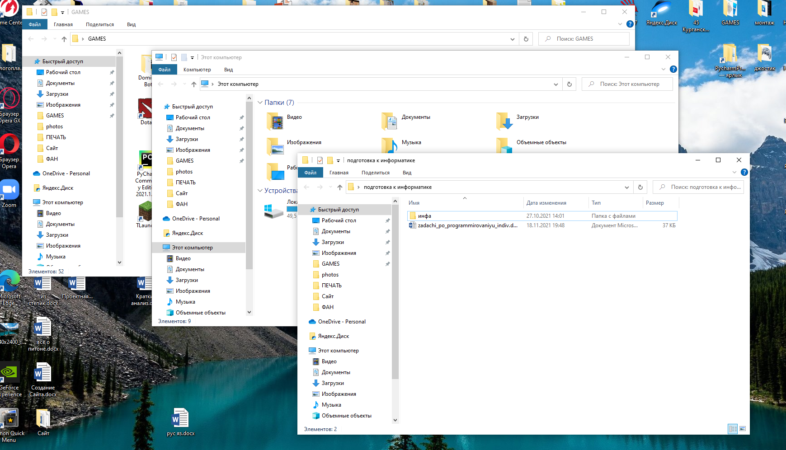

ГЛАВА 2 «Файлы и папки»
Файлы и папки
Любая информация хранится на компьютере в виде файлов.
Это могут быть текст, фотография, песня, фильм. В компьютере вы их видите в виде значков 2.1 Файлов может быть очень много.
Их можно группировать по видам или темам и складывать в папки 2.2 Папки обычно окрашены в желтый цвет, но могут иметь и другой вид.
Это зависит от графического оформления операционной системы.
По такому принципу и хранится информация в компьютере.
Файл – в папке, каждая папка может быть внутри другой папки, а та, в свою очередь, в основной памяти компьютера – на жестком диске.
2.1
2.2
Безопасное хранение информации в компьютере
Обычно в компьютере установлено два больших хранилища информации 2.4. На диске С всегда хранятся файлы операционной системы и программ.
Перемещать, изменять, корректировать эти файлы не рекомендуется. Это приведет к поломке компьютера.
Для хранения фотографий, рисунков, музыки, фильмов и другой личной информации рекомендуется использовать отдельный диск, например, D.
На диске 'C' храняться программы
На диске 'D' храняться Документы, музыка, фильмы и различные файлы
.

Примеры дополнительных программ, которых нет в новом компьютере, их устанавливают отдельно
Microsoft Word – программа для работы с текстом.
Microsoft Excel – программа для проведения расчетов, составления таблиц и диаграмм, вычисления сложных функций.
WinRaR (WinRAR, 7-ZIP, WinZIP) – архиватор, то есть программа, при помощи которой можно уменьшить размер файла или папки с файлами.
Skype – программа для голосового и видеообщения по интернету.
Как создать папку
Щелкните один раз правой кнопкой мыши по пустому месту, когда вы находитесь на Рабочем столе или в другой папке. Должен появиться список.

Наведите курсор на пункт «Создать». Нажмите левую кнопку мыши.
Наведите курсор на самый верхний пункт «Папку» и также нажмите на него левой кнопкой мыши.
Должна появиться новая папка. Буквы будут подкрашены синим цветом. Это означает, что папка уже создана и компьютер предлагает выбрать для нее название.
Впишите название. Чтобы закрепить введенное слово за папкой, щелкните по пустому месту левой клавишей мыши или нажмите клавишу Enter на клавиатуре.
Чтобы переименовать папку, наведите курсор мыши на нужный объект. Щелкните правой кнопкой мыши. В меню выберите пункт «Переименовать»

Как удалить файл или папку
Наведите курсор на выбранную папку. Кликните правой кнопкой мыши. Выберите пункт «Удалить».
Нажмите левую кнопку мыши. Появится окно, уточняющее ваши действия. Если хотите удалить, нажмите левой кнопкой мыши «Да».
Папка будет перемещена в корзину компьютера. Ее возможно восстановить.

Значок «Корзина» расположен на Рабочем столе. Кликнув по нему, можно посмотреть удаленные файлы, удалить их окончательно или восстановить.
Чтобы не засорять компьютер, регулярно удаляйте файлы из корзины. После очистки корзины восстановить файлы будет нельзя
Управление окнами
Когда вы открываете папку или программу, это значит – вы открываете окно, в котором содержатся различные файлы (значки).
Каждая программа открывается в отдельном окне.

Одновременно можно открыть несколько программ. Все окна будут видны на Рабочем столе. И будут накладываться друг на друга.
Чтобы сделать нужное вам окно активным, необходимо кликнуть мышью по любому его месту.
Можно корректировать размер и положение каждого окна на экране. Для этого используют три кнопки в правом верхнем углу:
закрыть окно (выйти из программы);
свернуть окно (и поместить его закладку на нижнюю панель рабочего стола)
развернуть окно на весь экран;
сделать меньше размер окна или вернуться к прежнему размеру;